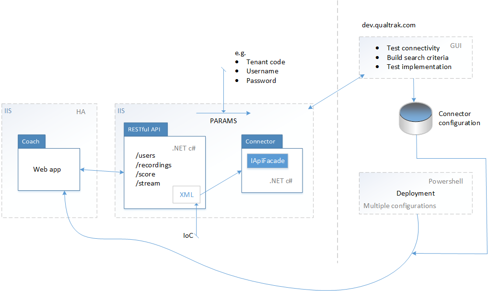

RESTful API¶
RESTful implemetation¶
This illustration shows the relationship between the api and the deployment process of the Coach product:
In the above illustration you see the Coach product. Coach calls on end points [e.g. users] to either pull or push data.
These end points in turn will call out to a recorder via a Connector implementation. The Connector implementation will be code that you specifically write to talk to your recorder. In this Connector you will (a) reference your own api and (b) interpret that data [e.g. search criteria] that is being passed from the RESTful end point.
The last [far right] part of this illustration explains how you test your implementation and what part this plays during the installation.
Plug your own (or other 3rd party) api’s into middleware¶
The RESTful api is the container that you use to hook into a connector. The connector has the bare minimum to manage the communication with the RESTful api. However, if the connector requires a new method then this is completely in your control. You have the freedom to modify the caller [RESTful api code base] as well as the callee [connector].
Target different deployments¶
This robust RESTful api approach not only offers you a way to quickly code transactions with your api but the other benefit is removes the complexity of using minor permutations of your api with different end-clients through the use of IoC.
Controllers¶
What follows is a short description of each of the RESTful API end points:
- Users
- A user from the Recorder
- Recordings
- Either a list of recordings or the url of a single recording
- Score
- Pass evaluated recording scores back to your recorder system
- Connectors
- Used to test connectivity
- Stream
- A proxy to download the recording to a media player
Handlers¶
- BasicAuthenticationGetMediaHandler
- A proxy to download the recording when needing to satisfy a Basic Authentication challenge